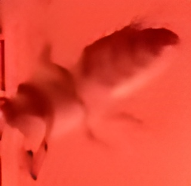
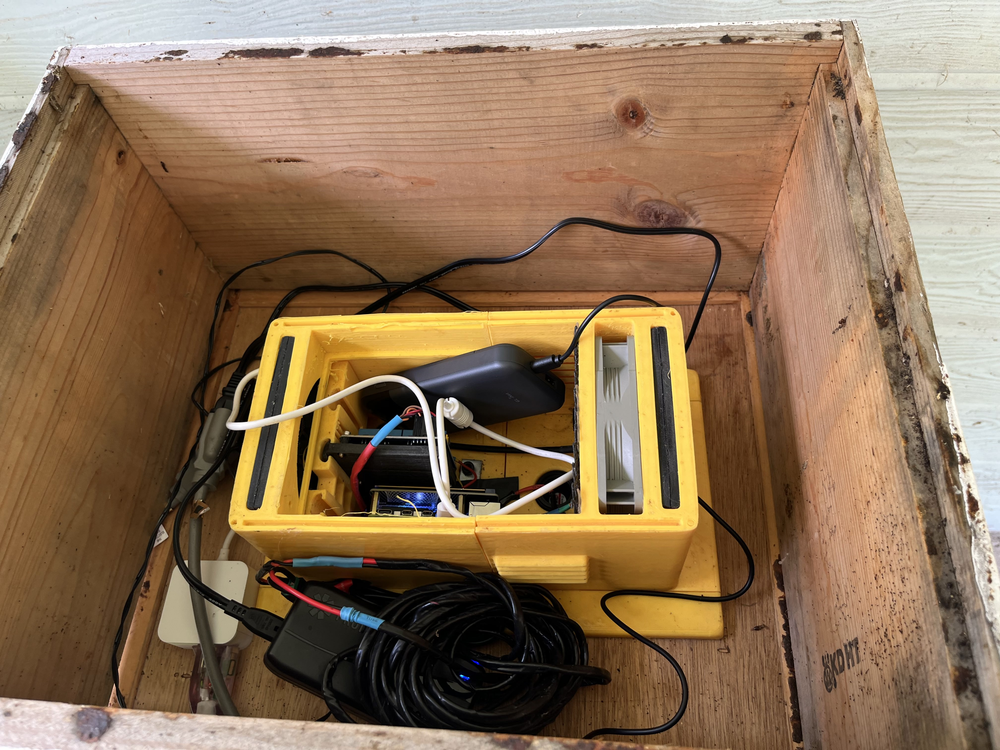

Teleoperated 360◦ Video Capture of Beehives for Scientific Visualization in VR
Abstract
Studying bee behavior and diagnosing hive issues in their natural habitats has often been a challenge due to limited visibility, observer interference, and limitations of conventional recording methods. A teleoperated immersive 360◦ view offers an unobstrusive, holistic observation within the hive. In this work, we present a framework for capturing and analyzing bee activity using commercially available 360◦ cameras and hardware to create an immersive VR experience.

System overview of our teleoperated 360◦ video capture framework.

Camera setup inside a beehive.

Image of a single bee captured inside the beehive using our teleoperated framework.

Electronic setup consisted of a 360◦ camera, a Raspberry Pi, and a battery pack.
Video Presentation
BibTeX
@article{YourPaperKey2024,
title={Teleoperated 360◦ Video Capture of Beehives for Scientific Visualization in VR},
author={Ahn, Charles and SetepenRa-Deloatch, Ashaki and Ramadan, Ubada and Vo, Quang and Wojtecki, Jacob Matthew and Moy, Nathan Alan and Huang, Ching-I and Han, Bo and Chen, Songqing and Fisher-Maltese, Carley and Alburaki, Mohamed and Yu, Lap-Fai},
journal={VRST'25 Conference Demo},
year={2025},
url={https://your-domain.com/your-project-page}
}